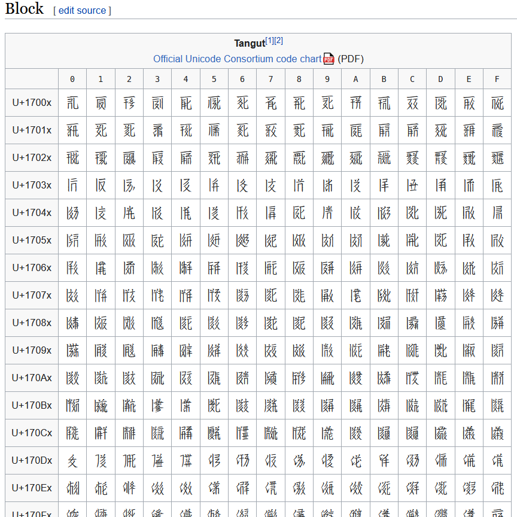
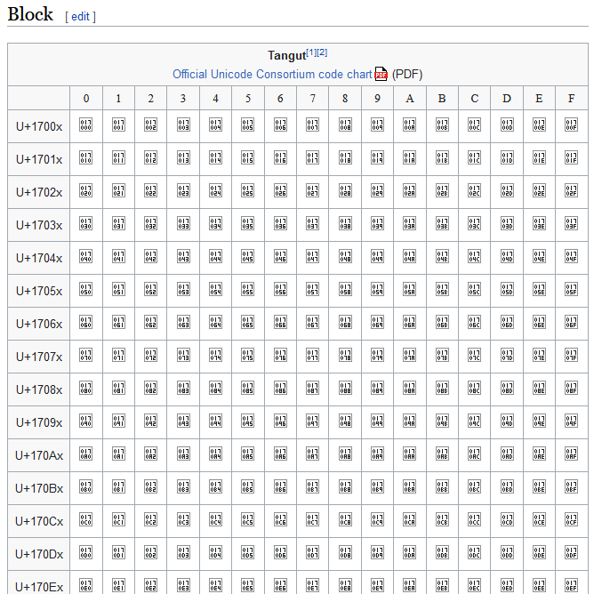
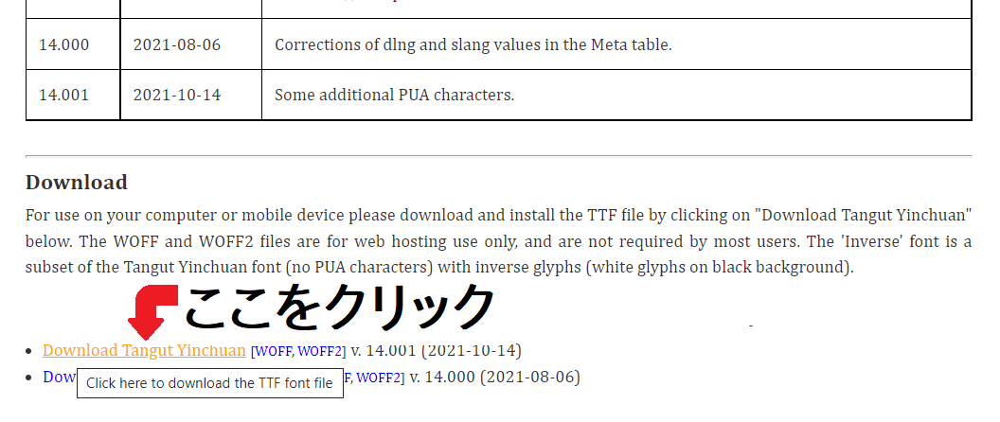
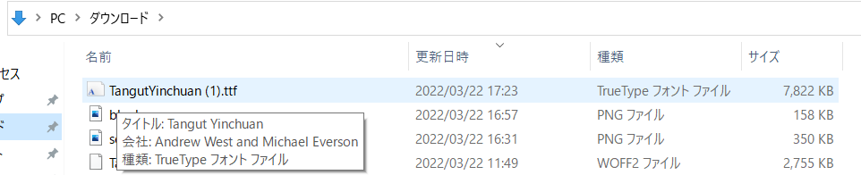
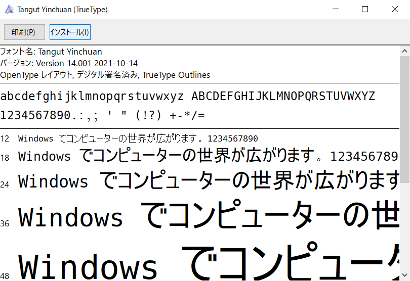
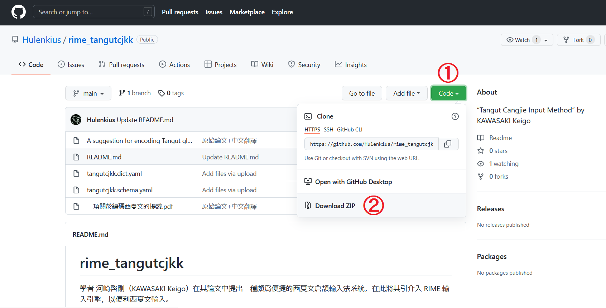
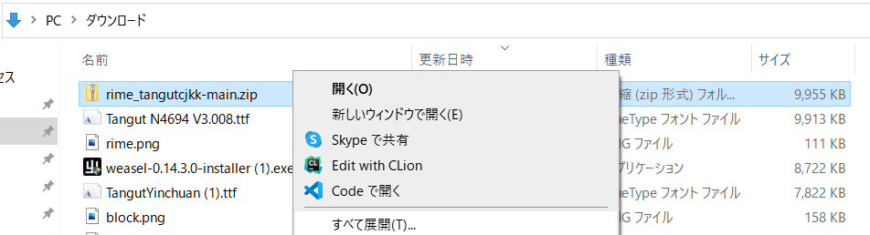
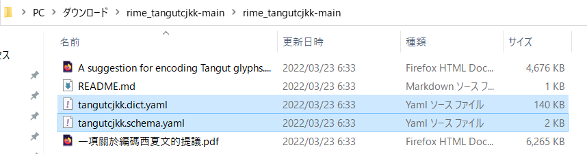
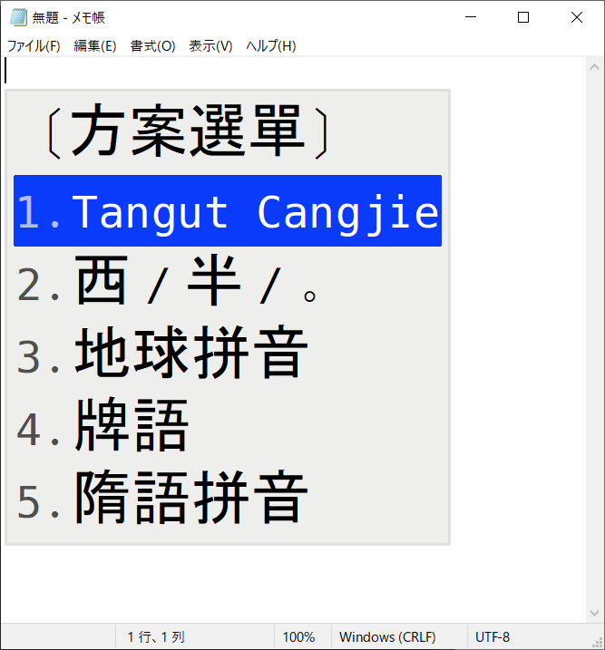

残念ながら、お使いのパソコンではそのままでは西夏倉頡を使うことができません。暇とやる気があれば、環境構築せずともオンラインで西夏倉頡を使える Web アプリを実装してみようかとも思いますが、2022年3月22日現在まだ実装していないので、以下に示す指示を読んで西夏倉頡を使うための準備をしていきましょう。
2016 年の Unicode 9.0 で西夏文字が Unicode に収録されました。しかし、Unicode への収録というのはあくまで「この文字を電子的に表すには、こうやって表すこととする」[1] という約束を定めただけであり、それを実際に表示するにはフォントが必要です。当サイトでは Web フォントを指定しているので、フォントがお使いのパソコンやスマホなどにインストールされていなくとも、「𗼇𘂜𗟲𗿳𗖵𘃎𘇂𗊏」や「𗹦𗼻𗯨𗐯𗂥，𗾔𗼑𗉘𘝨𗜓。」などと正しく表示できるようになっているはずですが、次に入れる IME 内で変換候補一覧が正しく表示できるようにするためにも、英語版 Wikipedia の西夏語の本一覧だったり、Unicode に載っている西夏文字の一覧だったりといったページを正しく表示するためにも、フォントを導入しておいた方がよいでしょう。
さて、フォントを導入するにはどうすればいいかというと、まず Tangut Yinchuan のサイトに行き、下の方にある「Download Tangut Yinchuan」をクリックします。
Windows の場合、そうしてダウンロードしたファイルを
ダブルクリックして開き、「インストール」をクリックすることでフォントが入るはずです。
同様にして、もう一個、Tangut N4694 というフォントもダウンロードしてインストールしておいてください。右上の下矢印ボタンでダウンロードできるはずです。
暇とやる気があれば、Mac とかでのフォント導入方法も書くかもしれません。それまでは、「Mac フォント 追加」とかで調べて頂ければと思います。
RIME は、主に中国語圏で人気の IME です。オープンソフトウェアとなっており、設定ファイルさえ書けば高いカスタマイズ性を誇ることから、中国語およびそれに類する書記体系の独自 IME が欲しい際には欠かせないソフトウェアです[2]。
西夏倉頡のための定義ファイルは、hulenkius さんという方が用意してくださったものがあるので、そちらを使っていきます。
ということで、まずは RIME をインストールします。https://rime.im/download/ を開いて、Windows や Mac なら「下載」と書いてあるリンクをクリックすることでダウンロードが始まるはずです。ダウンロードしたインストーラーを起動することで、RIME がインストールされるはずです。
そうしたら、hulenkius さんのリポジトリを開き、緑色の「Code」というところをクリックし、Download Zip をクリック。
ダウンロードしたファイルを右クリック → 「すべて展開」し、
tangutcjkk.dict.yaml と tangutcjkk.schema.yaml を選択して、
設定フォルダにコピーします。設定フォルダは、Windows なら %APPDATA%\Rime、Mac なら ~/Library/Rime、Linux なら ~/.config/ibus/rime に位置しているはずです。
最後に、設定フォルダ内の default.custom.yaml の schema_list 内に - {schema: tangutcjkk} の行を足して、「Ctrl + Alt + `」で更新（日本語キーボードだと上手く行かない場合があり、その際は言語バーを右クリックして「重新部署」をクリックすることで対処してください）。
そうしたら「Ctrl + `」または「F4」で入力方式の選択メニューを出し、Tangut Cangjie を選ぶことで、西夏倉頡で入力ができるようになっているはずです。なお、日本語キーボード Windows の場合、「`」が半角全角キーに対応していることがあります。
入力を RIME に切り替えて、「ALMX FDHQK MDSNN ZTLP SVYKU RKYP NQANQ EYX」と入力していくことで、前述の「𗼇𘂜𗟲𗿳𗖵𘃎𘇂𗊏」が入力できることをご確認ください。次回からは、西夏倉頡の仕組みを具体的に見ていきます。
[1] 実際には Unicode への収録で文字に結びつくのは「コードポイント」と呼ばれるものであり、そのコードポイントに対して文字符号化スキーム (character encoding scheme) というのを適用したものが、ファイルなどに記録される 0 や 1 の列となります。しかしながら、今回の話をする上でこれは全く関係ないので、気にしなくて構いません。
[2] 逆にいうと、一般的な日本語入力のような比較的複雑な漢字仮名変換に対処することを想定として設計されたソフトウェアではありません。